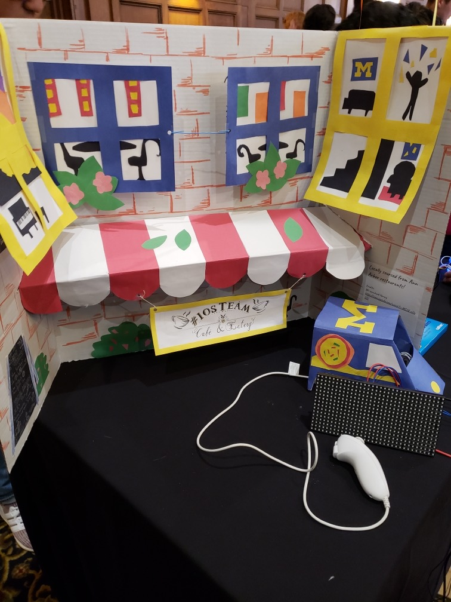

OVERVIEW
In our final project for EECS183, our assignment was to develop a project utilizing the Arduino UNO, and we chose to create an engaging series of cafe-inspired mini-games. Our project features three engaging games: "Boba Catching," "Macaron Tilt," and "Hungry Squirrels." To enhance gameplay flexibility, we integrated a Wii Nunchuck, introducing new controls such as the thumbstick, tilt, and buttons.
In "Boba Catching," a random-colored boba appears in the top right corner, challenging users to consume the correct-colored boba while avoiding straws to accumulate points. This implementation utilizes the Arduino thumbstick in a 360-degree motion.
"Macaron Tilt" presents a challenging stacking game where users, playing as a plate, must catch blue and white macarons while evading green and white, as well as red and white macarons. Without physics, users focus solely on surface collision to build the macaron tower and score points. The Arduino tilt sensors control the plate's movements.
Finally, "Hungry Squirrels" is a mini-game centered around delivering pizza to famished squirrels. Players assume the role of a pizza worker being pursued by hungry squirrels. Utilizing the thumbstick and ZL button on the joystick, users navigate the car across different lanes and dispatch pizzas to fend off the squirrels.
MY ROLE
In the project, my primary responsibility revolved around overseeing all hardware and sensor components. I successfully wired the Nunchuck and the Arduino, and getting the diverse sensor values. Using these values, I actively contributed to their integrating into the various games.
Additionally, I played a role in devising and coding distinct collision algorithms essential to all three mini-games: from the interaction between the black boba to colored boba, boba-to-straw, plate-to-macaron, macaron-to-macaron, and pizza-to-squirrel collisions. This was important to make our game playable and bug free for users.
Furthermore, I created all of the user interface screens for game flow, allowing users to select between different games, restarting the game, and exiting out.
DEVELOPMENT STACK
- C++
- Wii Nunchuck
- Arduino UNO Kit
AWARD
We were the Grand Prize winner among 50 participating teams at the showcase held by the University of Michigan.
DETAILS
We won the Grand Prize(1st place) at the showcase!
Demo Video
Display:
